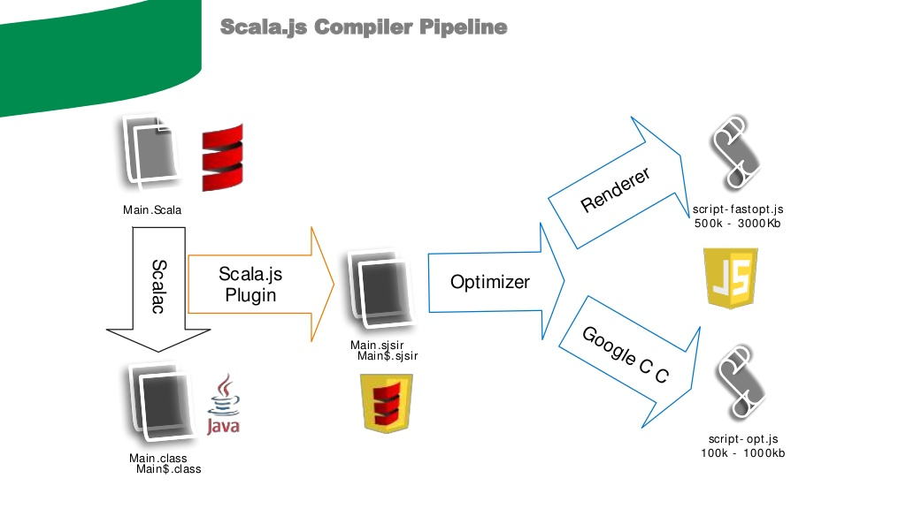

Scala.js
Bill Carlson
- Primarily Scala/Java Programmer
- Really, I program in anything I get paid to program in
- Lately, lots of Javascript/Coffeescript
Twitter: @coacoas
Github: http://www.github.com/coacoas
Disclaimer
While I hope this presentation will be informative, there will be some references to perceived shortcomings in Javascript. Any opinions expressed in this talk are mine and mine alone.
s/Javascript/Java/g
Disclaimer
Please bear in mind that this is all very new, and I am not an experienced Scala.js developer. Most of the Scala.js code I have written was done explicitly for this presentation, and most of the code in this presentation is not mine.Please be kind.
But still ask questions!
Backend vs Frontend
"Back-End" Languages
- C
- C++
- Java
- Go
- Ruby
- Python
- PHP
- .NET
- Scala
- Groovy
- Clojure
- Elixir
- ...
"Front-End" Languages
- Javascript
Why?
Scala.js
What is Scala?
Scala is a modern multi-paradigm programming language designed to express common programming patterns in a concise, elegant, and type-safe way. It smoothly integrates features of object-oriented and functional languages
Scalable Language
Benefits of Scala
- Static Typing (with inference)
- Modularity
- Collections
- Comprehensions
- ...and all the expressiveness of Scala!
Scala.js
What is Scala.js?
Scala.js compiles Scala code to JavaScript, allowing you to write your web application entirely in Scala!
How does it work?
Features of Scala.js
- Full use of Scala - including macros! (some exceptions apply)
- 100% Javascript Interop
- Type-safe
- Integrated directly with sbt
- Type-safe
- Generates "very" efficient code
- Type-safe!
OK, Why is type-safety such a big deal?
- Removes a full class of errors
- Sanity in refactoring
- IDE Interaction
Types vs Tests
Types AND Tests
Where do these types come from?
Create facades for untyped Javascript libraries
Function signatures only, not implementation
Don't have to implement everything
Should only take a couple minutes
Facades already exist for popular libraries
- jQuery
- React
- Angular
- Bootstrap
- Google Maps
- D3
- Three.js ... and many more
But I don't wanna make a facade!
Sure. No problem.
js.Dynamic.literal
Example
The Code
package presentation.canvas
import org.scalajs.dom
import org.scalajs.dom.html._
import presentation.geometry.Point
import scala.scalajs.js.annotation.JSExport
import scala.util.Random
@JSExport
class Sierpinski {
@JSExport
def triangle(canvas: Canvas) = {
canvas.height = 255
canvas.width = 255
val ctx = canvas.getContext("2d").asInstanceOf[dom.CanvasRenderingContext2D]
var count = 0
var p = Point(0, 0)
val corners = Seq(Point(255, 255), Point(0, 255), Point(128, 0))
def clear() = {
ctx.fillStyle = "black"
ctx.fillRect(0, 0, 255, 255)
}
def run = for (i <- 0 until 10){
if (count % 3000 == 0) clear()
count += 1
p = (p + corners(Random.nextInt(3))) / 2
val height = 512.0 / (255 + p.y)
val r = (p.x * height).toInt
val g = ((255-p.x) * height).toInt
val b = p.y
ctx.fillStyle = s"rgb($g, $r, $b)"
ctx.fillRect(p.x, p.y, 1, 1)
}
dom.setInterval(() => run, 50)
}
}
Demo time!
Why Scala.js?

What can I do with it?
Client-side Web Programming
Node.js Modules
Native GUI Application (using Electron)
Anything you can do in Javascript!
Pebble(?)
Why not use Scala.js?
- You're not using Scala on the server
- Existing code